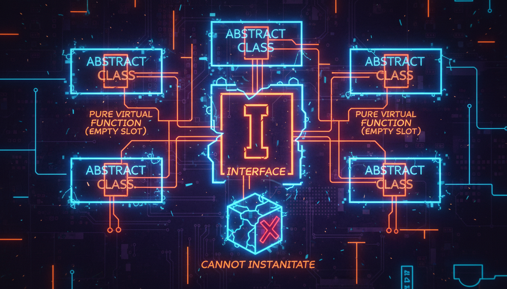

Чисто віртуальні функції, абстрактні класи, інтерфейси

Чисто віртуальна функція — це віртуальна функція без реалізації в базовому класі. Клас, що містить хоча б одну таку функцію, стає абстрактним.
#include <iostream>
// Абстрактний клас (інтерфейс)
class IShape {
public:
virtual double getArea() const = 0; // Чисто віртуальна
virtual double getPerimeter() const = 0; // Чисто віртуальна
virtual void draw() const = 0; // Чисто віртуальна
virtual ~IShape() {} // Віртуальний деструктор
};
class Circle : public IShape {
private:
double radius;
public:
Circle(double r) : radius(r) {}
double getArea() const override {
return 3.14159 * radius * radius;
}
double getPerimeter() const override {
return 2 * 3.14159 * radius;
}
void draw() const override {
std::cout << "[Коло, r=" << radius << "]" << std::endl;
}
};
class Square : public IShape {
private:
double side;
public:
Square(double s) : side(s) {}
double getArea() const override {
return side * side;
}
double getPerimeter() const override {
return 4 * side;
}
void draw() const override {
std::cout << "[Квадрат, a=" << side << "]" << std::endl;
}
};
int main() {
// IShape shape; // ПОМИЛКА! Не можна створити абстрактний клас
IShape* shapes[] = { new Circle(5), new Square(4) };
for (auto s : shapes) {
s->draw();
std::cout << "Площа: " << s->getArea()
<< ", Периметр: " << s->getPerimeter() << std::endl;
}
for (auto s : shapes) delete s;
return 0;
}